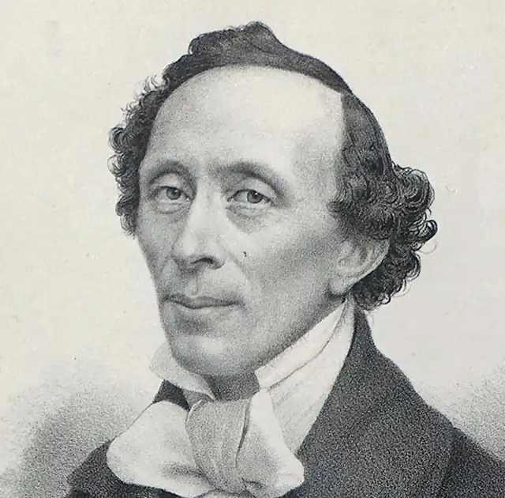
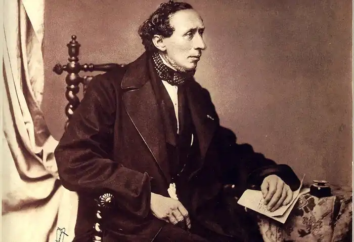
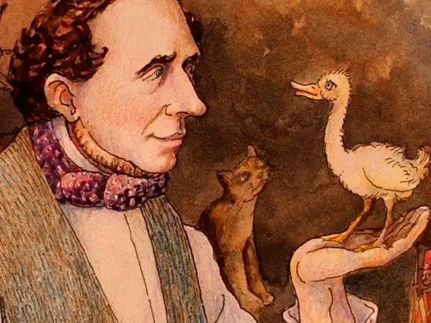

ГАНС ХРІСТІАН АНДЕРСЕН
(1805-1875)
Ганс Хрістіан Андерсен — датський казкар, романіст, поет і драматург — народився 2 квітня 1805 року в невеличкому провінційному містечку Оденсе в сім'ї чоботаря. Батько, незважаючи на свій фах, був людиною начитаною і свою любов до книги зумів передати Гансу Хрістіану. Потяг до творчості привів його в 1819 році до столиці, де він, живучи впроголодь, зміг закінчити школу й університет. Перші три роки в Копенгагені Андерсен пов'язує своє життя з театром: робить спробу стати актором, пише трагедії та драми. У 1822 році виходить п'єса "Сонце ельфів", написана за давньоскандинавським сюжетом. Драма виявилася незрілим, слабким твором, але привернула увагу дирекції театру, з яким на той час співпрацював автор-початківець. Рада директорів домоглася для Андерсена стипендії й права безкоштовного навчання в гімназії. Сімнадцятирічний юнак потрапляє до другого класу латинської школи й, незважаючи на глузування товаришів, закінчує її. У 1826-1827 роках виходять перші друковані вірші Андерсена, а в 1829 році він досить вдало випробовує себе в жанрі дорожніх нотаток — книжка "Подорож пішки від Хольмен-капалу до східного мису острова Амагер" вразила сучасників свіжістю світосприйняття, багатою фантазією й життєрадісним гумором. Мандрувати Андерсен любив протягом усього свого життя: він побував у Німеччині, Італії, Франції, Англії, Швеції, Португалії, Греції, Північній Африці, збирався до Америки. Його дорожні нотатки відзначалися точністю замальовок з натури в поєднанні з романтичною фантазією, мали пізнавальний й захоплюючий характер, були написані живою мовою. Спогади про подорож до Італії стали основою для написання першого роману Андерсена "Імровізатор" (1834). Усього в 30-ті роки XIX століття видатним датчанином було написано шість романів ("Імпровізатор", "О.Т.", "Тільки скрипаль" та ін. які мали незмінний успіх. Автора навіть порівнювали з В. Скоттом і В. Гюго. Але світове визнання йому принесли казки. З 1835 року Андерсен починає періодично видавати казки, які в 1841 році увійдуть у книжку "Казки, що були розказані дітям". Ранні казки Андерсена — це, як правило, літературні переробки народних казок, які він сам чув у дитинстві ("Кресало", "Маленький Клаус і Великий Клаус", "Принцеса на горошині", "Дикі лебеді", "Свинопас" та ін.). Сюжет "Нового вбрання короля" було запозичено з іспанського джерела. А от "Дюймовочка", "Русалочка", "Калоші щастя", "Ромашка", "Стійкий олов'яний солдатик", "Оле Лукойє", хоча й дещо пов'язані з фольклором, все ж таки є авторськими творами. На тлі численних казкарів, яких породила епоха романтизму в різних країнах, казки Андерсена відрізняються відсутністю дидактичних основ і, як здавалося критикам XIX століття, відсутністю належної шани до королівських осіб, які в казках Андерсена ходять палацом у пантофлях (адже палац є їхнім домом), стелють постелі й варять гречану кашу. Казки Андерсена, з одного боку, є цілком антисоціальними, а з другого — мегасоціальними. Вони вийшли за межі свого століття, стали постійними супутниками людства через бачення датським казкарем вічного змісту будь-якої людини, нехай то буде король, королева, принцеса або селянин. Символом творчості Андерсена вважається Русалочка, героїня однойменної казки (їй навіть встановлено пам'ятник у Данії). Народні сюжети, пов'язані з любов'ю між людиною і антропоморфною природною істотою, існують у різних народів (згадаймо поетичну драму Лесі Українки "Лісова пісня", яку теж було створено за фольклорними мотивами). Знав подібні легенди й датський фольклор. Але казка, яку було створено Андерсеном, набула особливого поетичного змісту. Русалочка втілює стихійні сили, від яких вже давно трагічно відокремилось людство. Русалочка, Дюймовочка, Гидке Каченя відображають протиріччя між трагічно-утилітарним світом людей і таємничими силами природи й творчості. Всі романтичні герої Андерсена не відмовляються від своєї справжньої поетичної природи, хоч би як важко їм велося. Слово "справжній", взагалі, є ключовим в Андерсена. "Справжній" означає природний, істинний, правдивий. У "Калошах щастя" письменник обігрує вічну проблему незадоволення людей тим, що вони мають, споконвічні прагнення кращої долі. Нерозумний чиновник, який живе в ХЇХ столітті, мріє про середньовіччя. Зазнавши великого страху від здійснення власної мрії, чиновник повертається до свого віку і дякує Богові за те, що він не живе в середньовіччі. Іншим володарем Калош щастя стає простий солдат, який мріє зайняти командний пост, але, отримавши його, дуже хоче знову стати простим солдатом. "Калоші щастя", з одного боку, вирішують філософську проблему щастя в дусі релігійного фаталізму (що є характерною рисою романтизму), з другого — іронізують з приводу ідеалізації середньовіччя, яка була вельми поширеною у колах романтиків (романтична іронія). Андерсен є захисником простого й ясного погляду на світ, який, на його думку, і є справжнім. Такий погляд мають діти й художники. Тому саме малий хлопець стає відкривачем істини "У новому вбранні короля", тому й осміяно дурненьку принцесу зі "Свинопаса", яка погналася за дорогими іграшками й відмовилася від справжніх, природних, і тому чарівних троянди й солов'я. І справжня принцеса завжди буде принцесою, навіть в одязі жебрачки ("Принцеса на горошині"), тому що принцесою вона народилася (знову релігійний фаталізм). Сорокові роки XIX століття стають новим і найвищим досягненням казкової творчості Андерсена. До збірки "Нові казки" (1844-1848) увійшли найзначніші й найвідоміші казки: "Снігова королева", "Гидке каченя", "Соловей", "Тінь", "Дівчинка з сірниками". Казки Андерсена стають більш ускладненими, глибокими, мають подвійного адресата: через захопливість фабули вони приваблюють дітей, а глибиною змісту — дорослих. Його казки написано простою мовою, наближеною до народної, і цим вони є близькими до дитячого розуміння. Але за удаваною простотою приховується філософський підтекст, який є незрозумілим дітям, але цікавить дорослих. Чимало мотивів творчості Андерсена приєднуються до традиційних романтичних мотивів. Гидке каченя стає в один ряд з альбатросом Кольріджа й Бодлера, примушує згадати "Чайку" Чехова. Проблема трагічного життя обдарованої особистості набула особливої актуальності в епоху розвитку буржуазних настроїв. Гидке каченя одночасно є прекрасним лебедем, але зажирілі мешканці пташника цього не розуміють. Далі власної годівниці вони не бачать і власну рабську психологію вважають єдино правильною. Казка "Тінь", найглибший філософський твір Андерсена, примикає до двох традицій, які існували в романтизмі. З одного боку, історія вченого, який спромігся шляхом раціонального експерименту відлучити від себе власну тінь, споріднює казку із творами Гофмана ("Крихітка Цахес", "Еліксири Сатани"), повістю Шаміссо "Неймовірні пригоди Петера Шлеміля", а також із знаменитим "Франкенштейном" Мері Годвін-Шеллі. Високодуховна й талановита людина, яка стала рабом тіні, сама накликала на себе біду. Не розуміючи справжньої суті природи, вчений поставився до власного експерименту занадто легковажно, відпустивши тінь в гості до сусідів. Він думав, що тільки він сам є самим собою, але людська психіка — річ таємнича, і про це неодноразово говорили романтики, розкриваючи тему двійництва. Тінь виявляється досить самостійною і зловредною істотою, яка руйнує долю свого колишнього господаря. Так через "дитячий" жанр казки Андерсен передає глибокі філософські думки. Збірки останнього етапу творчості письменника вийшли під назвою "Історії" (1852-1855) та "Нові казки та історії" (1858-1872). Це справді були дивовижні історії про навколишній світ, риси реальності дедалі більше проникають у казки письменника, героями яких стають сучасники автора: звичайні люди зі своїми повсякденними турботами і проблемами, видатні вчені й художники. Андерсен хоче привернути увагу читача до майже казкових можливостей людини. У 1855 році з'являється автобіографічна книжка "Пригоди мого життя", яка стала продовженням і доповненням першого варіанта автобіографії "Казка мого життя" (1847). Зі сторінок цих книжок постає образ видатної людини, великого фантазера, який зумів через усе своє життя пронести дитячу закоханість у таємничий світ казки й щедро поділитися цим зі своїми читачами. Помер видатний датський письменник, засновник літературної казки, у віці сімдесяти років 4 серпня 1875 року в Копенгагені. ОСНОВНІ ТВОРИ: "Гидке каченя", "Соловей", "Дівчинка з сірниками", "Снігова королева", "Калоші щастя". ЛІТЕРАТУРА: 1. Гренбек Б. Ханc Кристиан Андерсен. Жизнь. Творчество. Личность. — М., 1979.; 2. Брауде Л. Ю. Жизнь и творчество Ханса Кристиана Андерсена. — Л., 1973.